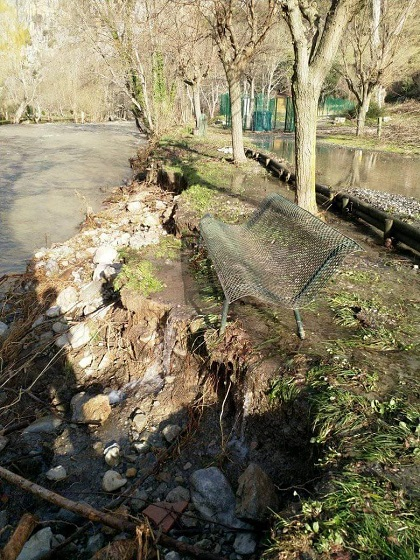
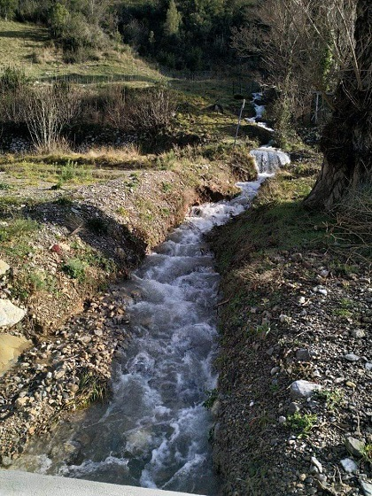

Vue de l'aval de St Martin depuis la route départementale, la Borde sous l'eau (le pont vieux est noyé...) (vidéo de Russell Stynes)
Photo de l'Aude à St Martin, vue depuis le village, de Marianne Clausen
Après la crue, le 24 janvier - photos Marianne Clausen
Le banc en bordure d'Aude, à coté du terrain de boules, a résisté même s'il a un pied en équilibre.

L'allée menant à la salle des fêtes a maintenant une salle mine
Le ruisseau aval du village coule à plein, un peu plus d'eau et on pourra voir les jets d'eau des vignes
Après la crue, le 25 janvier - photos Amandine

Le sable dans les champs de La Borde. Les clôtures renversées
Après le "Que d'eau ! Que d'eau !" Le "Que de sable ! Que de sable !"
La crue a laissé du sable dans tous les champs de La Borde (Quand elle n'a pas creusée...)
Mais pas de trous avec des petits Gobies (poissons)
(Contrairement à la crue de 1975 qui m'avait permis des pêches très intéressantes, en particulier sous notre cabane emportée)

Les eaux blanches au sur-lendemain de la crue, au niveau du pont vieux

Le devant des ruines de l'abbaye nettoyé par la crue
Pour comparer cette crue avec les dernières - ci-dessous la courbe du niveau de l'eau au Pont de l'Aude sur la RD 118 à Quillan les 22, 23 et 24 janvier 2020, extrait du site Vigiecrues (Station Quillan [Pont RD118] (Aude))

La crue du 13/09/1963 avait vu tout le jardin de ma maison être emportée, ce qui avait amené à remonter tout le mur qui longe l'Aude et à faire la pointe qui aujourd'hui entraîne la création d'un gouffre profond cache à truite. Lors de cette crue mémorable mon grand-père avait posé un caillou dans le reste du jardin. La consigne était que si l'Aude dépassait cette pierre, ils évacuaient la maison. L'Aude s'était arrêtée avant.
La crue de 1975 n'apparaît pas dans ces statistiques, pourtant à St Martin elle a entraîné pas mal de dégâts sur la Borde (dont la disparition de notre belle cabane - et le déplacement de la future construction de l'autre coté de l'Aude dans un terrain de mon grand oncle). Dans mes souvenirs, elle était montée plus haut que cette année et avait entraîné plus de dégat avec de nombreux trous d'eau qui ne s'étaient pas vidé aussi rapidement - mais mes souvenirs peuvent être très partiaux... Reste qu'entre ces 2 crus la rivière a creusé son lit de façon considérable : Les cailloux "îles" (Méridit par exemple) sur lesquels je jouais dans la rivière sont maintenant toujours émergés à plus de 30 cm au dessus du niveau de l'eau... Aussi même si la crue d'aujourd'hui est plus importante, il est possible qu'elle n'ait pas atteint le même niveau.
Je n'ai pas souvenir des crues de 1996 et de 2014...
le registre des affaires communales site de sont coté les crues qui ont ébranlé le pont vieux nécessitant d'importante réparations : crue de 1806, crue de 1842